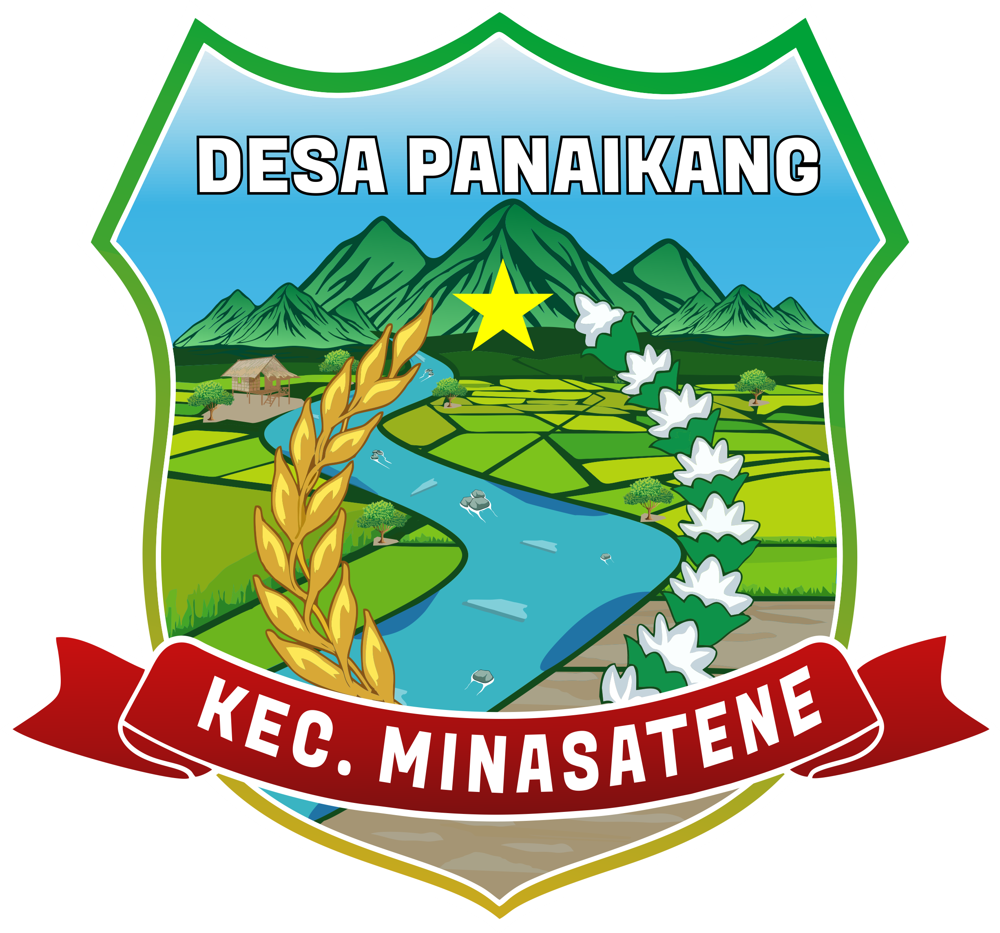

Selamat Datang di
Desa Panaikang
Portal resmi pelayanan administrasi, informasi publik, dan potensi desa yang terintegrasi secara digital.
Layanan Surat
Urus administrasi desa dengan lebih cepat dan mudah dari mana saja.
Informasi Publik
Dapatkan berita dan pengumuman terbaru seputar Desa Panaikang.
Potensi Desa
Jelajahi keindahan pariwisata dan dukung UMKM lokal desa kita.
Akses Semua dalam Satu Portal
Siap Memulai?
Mari bersama membangun Desa Panaikang yang lebih maju, transparan, dan sejahtera.